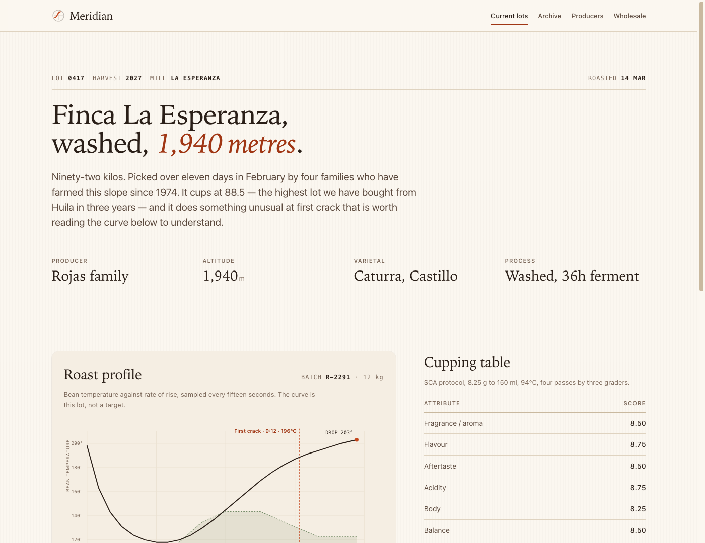
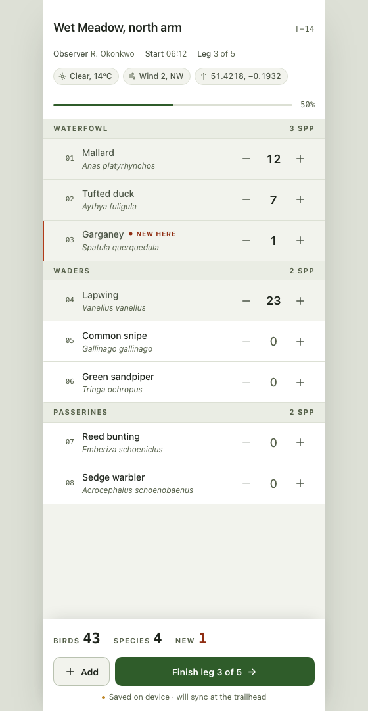
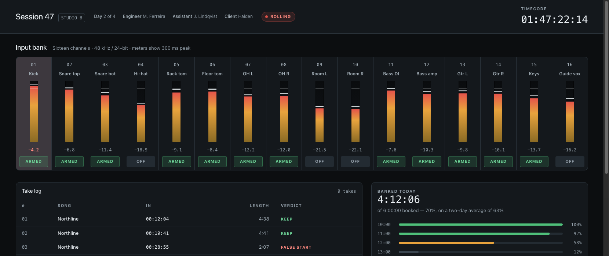

Each sample was built from one direction contract: a thesis, a world derived from the subject's own material culture, and a first viewport that answers the question rather than describing the product. The worlds share no palette, no type pairing, and no structure — that is the point.
No build step, no dependencies, no network. Open any file directly.

Marketing site · lightA single-origin lot page that argues with a computed roast curve instead of a farm photograph.
World: the cupping sheet and the roast log
Mobile app · lightOne-handed transect counting in daylight, with the running total pinned where the thumb rests.
World: the naturalist's ruled field sheet
Dashboard · darkSixteen channel strips an engineer can read from across a dark control room.
World: the console surface itself| Decision | Meridian | Tally | Bus 8 |
|---|---|---|---|
| Surface | Persuade, read once | Do one task, one hand | Scan sixteen values fast |
| Ground | Warm paper | Cool field paper | Near-black room |
| Ground chosen by | Print heritage | Daylight glare outdoors | Night session, dim room |
| Display face | Instrument Serif | None — task UI | None — a mono for measurement |
| Density | Generous | Measured, 44px targets | Dense |
| The one authored moment | The roast curve | The running total | The meters settling |
| Earned accent | First crack, once | New-to-transect, once | Amber meter, red clip, green arm |
Every sample was run through scripts/audit.js before shipping,
and each one failed on the first pass. What it caught:
| Sample | Finding | Fix |
|---|---|---|
| Tally | 13 text nodes under AA — the muted ink measured 3.93:1 on the group-header ground and 4.17:1 on field paper | Ink darkened to #556049, verified ≥4.5:1 on all three grounds |
| Tally | 11 running labels at 11px, below the declared 12px floor | Condition chips, species names and the progress readout raised to 12px |
| Bus 8 | The arm button's own ground pulled its label to 3.84:1 | Ink raised to #939FA9, verified against the darkest strip |
| Bus 8 | 16 channel strips started at opacity: 0 and were revealed from JavaScript | Entrance animation removed entirely — a blocked timer would have left an empty console |